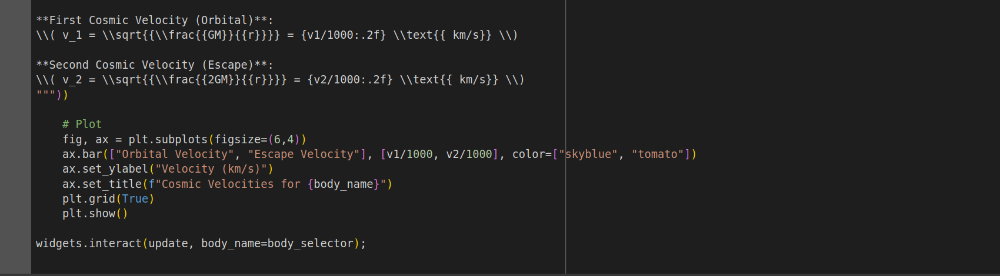
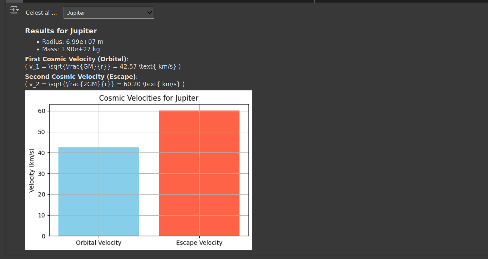

Problem 2# Problem 2: Escape Velocities and Cosmic Velocities
1. Definitions
-
First Cosmic Velocity (Orbital Velocity): The minimum speed needed to maintain a circular orbit around a planet. \(\(v_1 = \sqrt{\frac{G M}{r}}\)\)
-
Second Cosmic Velocity (Escape Velocity): The speed needed to escape a planet's gravitational field without further propulsion. \(\(v_2 = \sqrt{\frac{2 G M}{r}} = \sqrt{2} \cdot v_1\)\)
-
Third Cosmic Velocity: The speed required to escape the Sun's gravity from Earth’s orbit — i.e., to leave the Solar System. \(\(v_3 = \sqrt{v_{\text{esc,Earth}}^2 + v_{\text{orb,Earth}}^2}\)\)
2. Mathematical Analysis
Where: - \( G = 6.67430 \times 10^{-11} \, \text{m}^3\text{kg}^{-1}\text{s}^{-2} \) - \( M \): Mass of the celestial body - \( r \): Distance from the center of the body
Derivation:
From gravitational potential and kinetic energy balance: - Escape: \( \frac{1}{2}mv^2 = \frac{G M m}{r} \) - Solve for \( v \): \( v = \sqrt{\frac{2 G M}{r}} \)
3. Real-World Examples
| Body | Radius (m) | Mass (kg) | Orbital Velocity (m/s) | Escape Velocity (m/s) |
|---|---|---|---|---|
| Earth | \(6.37 \times 10^6\) | \(5.97 \times 10^{24}\) | ~7.91 km/s | ~11.2 km/s |
| Mars | \(3.39 \times 10^6\) | \(6.39 \times 10^{23}\) | ~3.55 km/s | ~5.03 km/s |
| Jupiter | \(6.99 \times 10^7\) | \(1.90 \times 10^{27}\) | ~42.1 km/s | ~59.5 km/s |
4. Importance in Space Exploration
- v₁: Used to put satellites into orbit.
- v₂: Required for planetary escape (e.g., space missions to Mars or beyond).
- v₃: Needed for interstellar missions (e.g., Voyager).
Conclusion
Understanding cosmic velocities is essential for mission design and orbital mechanics. The escape and orbital speeds define the energy requirements for launching spacecraft and exploring other worlds.  